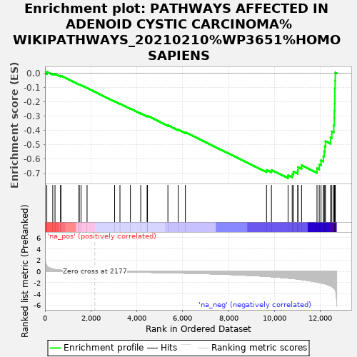
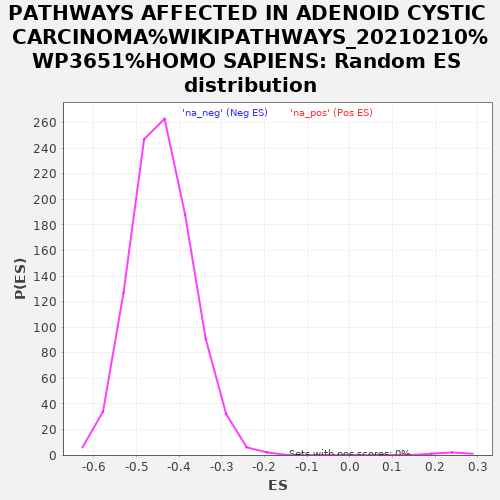

| | | Dataset | rankInfo |
| Phenotype | NoPhenotypeAvailable |
| Upregulated in class | na_neg |
| GeneSet | PATHWAYS AFFECTED IN ADENOID CYSTIC CARCINOMA%WIKIPATHWAYS_20210210%WP3651%HOMO SAPIENS |
| Enrichment Score (ES) | -0.73487425 |
| Normalized Enrichment Score (NES) | -1.6678216 |
| Nominal p-value | 0.0 |
| FDR q-value | 0.0028607105 |
| FWER p-Value | 0.147 |
Table: GSEA Results Summary

Fig 1: Enrichment plot: PATHWAYS AFFECTED IN ADENOID CYSTIC CARCINOMA%WIKIPATHWAYS_20210210%WP3651%HOMO SAPIENS
Profile of the Running ES Score & Positions of GeneSet Members on the Rank Ordered List
| SYMBOL | RANK IN GENE LIST | RANK METRIC SCORE | RUNNING ES | CORE ENRICHMENT | | 1 | HIST1H1E | 80 | 1.028 | 0.0112 | No |
| 2 | CEBPA | 339 | 0.409 | -0.0022 | No |
| 3 | HIST1H2AK | 437 | 0.329 | -0.0043 | No |
| 4 | MAP2K2 | 678 | 0.217 | -0.0195 | No |
| 5 | CTBP1 | 695 | 0.214 | -0.0171 | No |
| 6 | MYBL1 | 1485 | 0.063 | -0.0783 | No |
| 7 | ERBB2 | 1491 | 0.062 | -0.0776 | No |
| 8 | DTX4 | 1572 | 0.053 | -0.0830 | No |
| 9 | HRAS | 1835 | 0.027 | -0.1032 | No |
| 10 | NOTCH1 | 3036 | -0.062 | -0.1969 | No |
| 11 | CMTR2 | 3269 | -0.079 | -0.2138 | No |
| 12 | MORF4L1 | 3724 | -0.113 | -0.2477 | No |
| 13 | BRCA1 | 4174 | -0.147 | -0.2806 | No |
| 14 | MYB | 4452 | -0.171 | -0.2996 | No |
| 15 | SMARCE1 | 4469 | -0.172 | -0.2979 | No |
| 16 | MYCBP | 5359 | -0.244 | -0.3639 | No |
| 17 | CHEK2 | 5809 | -0.287 | -0.3944 | No |
| 18 | RAF1 | 6120 | -0.319 | -0.4134 | No |
| 19 | PTEN | 9658 | -0.898 | -0.6772 | No |
| 20 | MYC | 9872 | -0.958 | -0.6777 | No |
| 21 | BCORL1 | 10598 | -1.204 | -0.7144 | Yes |
| 22 | ATM | 10778 | -1.276 | -0.7068 | Yes |
| 23 | ARID4B | 10830 | -1.296 | -0.6888 | Yes |
| 24 | KDM6B | 11017 | -1.378 | -0.6800 | Yes |
| 25 | BCOR | 11033 | -1.384 | -0.6576 | Yes |
| 26 | MGA | 11185 | -1.466 | -0.6446 | Yes |
| 27 | FOXO3 | 11859 | -1.913 | -0.6651 | Yes |
| 28 | KANSL1 | 11956 | -1.982 | -0.6390 | Yes |
| 29 | FBXW7 | 12034 | -2.060 | -0.6100 | Yes |
| 30 | PIK3CA | 12138 | -2.148 | -0.5816 | Yes |
| 31 | JMJD1C | 12170 | -2.183 | -0.5469 | Yes |
| 32 | SETD2 | 12199 | -2.208 | -0.5115 | Yes |
| 33 | CREBBP | 12228 | -2.234 | -0.4757 | Yes |
| 34 | ARID5B | 12450 | -2.595 | -0.4490 | Yes |
| 35 | KAT6A | 12505 | -2.710 | -0.4071 | Yes |
| 36 | TLK1 | 12591 | -2.918 | -0.3642 | Yes |
| 37 | SRCAP | 12613 | -3.032 | -0.3142 | Yes |
| 38 | NCOR1 | 12617 | -3.058 | -0.2624 | Yes |
| 39 | PRKDC | 12628 | -3.093 | -0.2106 | Yes |
| 40 | KMT2C | 12633 | -3.104 | -0.1581 | Yes |
| 41 | SMC1A | 12634 | -3.109 | -0.1052 | Yes |
| 42 | ARID1A | 12651 | -3.261 | -0.0509 | Yes |
| 43 | EP300 | 12657 | -3.299 | 0.0048 | Yes |
Table: GSEA details [plain text format]

Fig 2: PATHWAYS AFFECTED IN ADENOID CYSTIC CARCINOMA%WIKIPATHWAYS_20210210%WP3651%HOMO SAPIENS: Random ES distribution
Gene set null distribution of ES for PATHWAYS AFFECTED IN ADENOID CYSTIC CARCINOMA%WIKIPATHWAYS_20210210%WP3651%HOMO SAPIENS